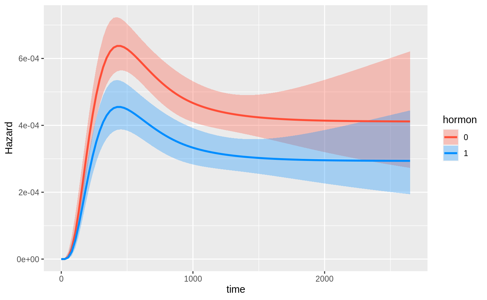
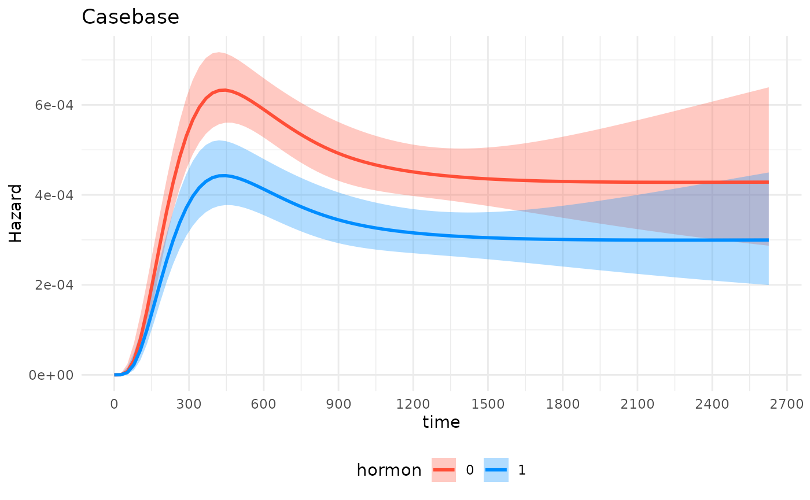

Plot Hazards and Hazard Ratios
Sahir Rai Bhatnagar
2020-06-19
Source:vignettes/plotsmoothHazard.Rmd
plotsmoothHazard.RmdIntroduction
In this vignette, we describe the plot method for objects of class singleEventCB which is obtained from running the fitSmoothHazard function. There are currently two types of plots: hazard functions and hazard ratios. We describe each one in detail below. Note that the plot method has only been properly tested for family="glm".
Hazard Function
The hazard function plots require the visreg package.
To illustrate hazard function plots, we will use the breast cancer dataset which contains the observations of 686 women taken from the TH.data package. This dataset is also available from the casebase package. In the following, we will show different hazard functions for different combinations of continuous, binary variables as well as their interactions.
library(casebase) #> See example usage at http://sahirbhatnagar.com/casebase/ library(visreg) library(splines) library(ggplot2) data("brcancer") str(brcancer)
One binary predictor, no interactions
We first fit a main effects only model with a spline on log(time) and hormonal therapy as main effects.
mod_cb <- fitSmoothHazard(cens ~ ns(log(time), df = 3) + hormon, data = brcancer, time = "time") #> Warning: glm.fit: fitted probabilities numerically 0 or 1 occurred summary(mod_cb) #> #> Call: #> glm(formula = formula, family = binomial, data = sampleData) #> #> Deviance Residuals: #> Min 1Q Median 3Q Max #> -0.1807 -0.1592 -0.1469 -0.1250 3.8671 #> #> Coefficients: #> Estimate Std. Error z value Pr(>|z|) #> (Intercept) -81.5876 17.8412 -4.573 4.81e-06 *** #> ns(log(time), df = 3)1 49.5341 11.7640 4.211 2.55e-05 *** #> ns(log(time), df = 3)2 142.3234 34.6841 4.103 4.07e-05 *** #> ns(log(time), df = 3)3 29.5342 7.1199 4.148 3.35e-05 *** #> hormon -0.3373 0.1255 -2.687 0.00721 ** #> --- #> Signif. codes: 0 '***' 0.001 '**' 0.01 '*' 0.05 '.' 0.1 ' ' 1 #> #> (Dispersion parameter for binomial family taken to be 1) #> #> Null deviance: 3354.9 on 30198 degrees of freedom #> Residual deviance: 3275.6 on 30194 degrees of freedom #> AIC: 3285.6 #> #> Number of Fisher Scoring iterations: 10
Hazard functions on separate plots
All arguments needed for the hazard function plots are supplied through the hazard.params argument. This is a named list of arguments which will override the defaults passed to visreg::visreg(). The default arguments are list(fit = x, trans = exp, plot = TRUE, rug = FALSE, alpha = 1, partial = FALSE, overlay= TRUE). For example, if you want a 95% confidence band, specify hazard.params = list(alpha = 0.05). For a complete list of options, please see the visreg vignettes.
We first plot the hazard as a function of time, for hormon=0 and hormon=1. This is achieved by specifying the xvar argument, as well as the cond argument. The cond argument must be provided as a named list. Each element of that list specifies the value for one of the terms in the model; any elements left unspecified are filled in with the median/most common category. Note that even though we fit the log(time), we must specify time in the xvar argument.
par(mfrow = c(1,2)) plot(mod_cb, hazard.params = list(xvar = "time", cond = list(hormon = 0), alpha = 0.05, main = "No Hormonal Therapy Hazard Function")) plot(mod_cb, hazard.params = list(xvar = "time", cond = list(hormon = 1), alpha = 0.05, main = "Hormonal Therapy Hazard Function"))

Hazard functions on same plots
Alternatively, we can plot the hazard functions on the same plot. This is accomplished with the by argument:

Note that if we want to extract the data used to construct the plot, e.g. to create our own, we simply assign the call to plot to an object (we may optionally set plot=FALSE in the hazard.params argument as to not print any plots):
plot_results <- plot(mod_cb, hazard.params = list(xvar = "time", by = "hormon", alpha = 0.10, ylab = "Hazard", plot = FALSE))
head(plot_results$fit) #> time hormon offset cens visregFit visregLwr visregUpr #> 1 0.01966482 0 0 0 3.689318e-36 6.638133e-49 2.050435e-23 #> 2 26.51084411 0 0 0 2.416415e-07 1.448572e-08 4.030909e-06 #> 3 53.00202340 0 0 0 6.617391e-06 1.396033e-06 3.136737e-05 #> 4 79.49320270 0 0 0 3.117354e-05 1.161907e-05 8.363746e-05 #> 5 105.98438199 0 0 0 7.793418e-05 4.006068e-05 1.516134e-04 #> 6 132.47556129 0 0 0 1.422914e-04 8.908747e-05 2.272692e-04
ggplot2 version
The function is flexible because you may leverage ggplot2 just by specifying gg=TRUE, the plot will return a ggplot object:
gg_object <- plot(mod_cb, hazard.params = list(xvar = "time", by = "hormon", alpha = 0.20, # 80% CI ylab = "Hazard", gg = TRUE))

attr(gg_object,"class") #> [1] "gg" "ggplot"
Now we can use it downstream for any plot while leveraging the entire ggplot2 ecosystem of packages and functions:
gg_object + theme_minimal()+ theme(legend.position = "bottom") + labs(title = "Casebase") + scale_x_continuous(n.breaks = 10)

One binary predictor with interaction
Next, we fit an interaction model with a time-varying covariate, i.e., to test the hypothesis that the effect of hormonal therapy on the hazard varies with time.
mod_cb_tvc <- fitSmoothHazard(cens ~ hormon*ns(log(time), df = 3), data = brcancer, time = "time") #> Warning: glm.fit: fitted probabilities numerically 0 or 1 occurred summary(mod_cb_tvc) #> #> Call: #> glm(formula = formula, family = binomial, data = sampleData) #> #> Deviance Residuals: #> Min 1Q Median 3Q Max #> -0.1802 -0.1596 -0.1478 -0.1258 3.7848 #> #> Coefficients: #> Estimate Std. Error z value Pr(>|z|) #> (Intercept) -70.386 18.301 -3.846 0.000120 *** #> hormon -28.136 40.926 -0.687 0.491774 #> ns(log(time), df = 3)1 41.803 11.968 3.493 0.000478 *** #> ns(log(time), df = 3)2 120.958 35.688 3.389 0.000701 *** #> ns(log(time), df = 3)3 25.080 7.321 3.426 0.000613 *** #> hormon:ns(log(time), df = 3)1 18.459 26.952 0.685 0.493407 #> hormon:ns(log(time), df = 3)2 53.596 79.427 0.675 0.499814 #> hormon:ns(log(time), df = 3)3 11.400 16.452 0.693 0.488342 #> --- #> Signif. codes: 0 '***' 0.001 '**' 0.01 '*' 0.05 '.' 0.1 ' ' 1 #> #> (Dispersion parameter for binomial family taken to be 1) #> #> Null deviance: 3354.9 on 30198 degrees of freedom #> Residual deviance: 3274.4 on 30191 degrees of freedom #> AIC: 3290.4 #> #> Number of Fisher Scoring iterations: 11
Now we can easily plot the hazard function over time for each hormon group:

One continuous predictor with interaction
Now we fit a model with an interaction between a continous variable, estrogen receptor (in fmol), and time.
mod_cb_tvc <- fitSmoothHazard(cens ~ estrec*ns(log(time), df = 3), data = brcancer, time = "time") #> Warning: glm.fit: fitted probabilities numerically 0 or 1 occurred summary(mod_cb_tvc) #> #> Call: #> glm(formula = formula, family = binomial, data = sampleData) #> #> Deviance Residuals: #> Min 1Q Median 3Q Max #> -0.1864 -0.1615 -0.1418 -0.1370 4.0603 #> #> Coefficients: #> Estimate Std. Error z value Pr(>|z|) #> (Intercept) -61.0913 16.5268 -3.697 0.000219 *** #> estrec -0.6219 0.3112 -1.998 0.045685 * #> ns(log(time), df = 3)1 34.9134 10.8102 3.230 0.001239 ** #> ns(log(time), df = 3)2 104.1444 32.2359 3.231 0.001235 ** #> ns(log(time), df = 3)3 20.5267 6.5954 3.112 0.001857 ** #> estrec:ns(log(time), df = 3)1 0.4240 0.2085 2.034 0.042002 * #> estrec:ns(log(time), df = 3)2 1.1779 0.5973 1.972 0.048601 * #> estrec:ns(log(time), df = 3)3 0.2630 0.1280 2.054 0.039960 * #> --- #> Signif. codes: 0 '***' 0.001 '**' 0.01 '*' 0.05 '.' 0.1 ' ' 1 #> #> (Dispersion parameter for binomial family taken to be 1) #> #> Null deviance: 3354.9 on 30198 degrees of freedom #> Residual deviance: 3265.3 on 30191 degrees of freedom #> AIC: 3281.3 #> #> Number of Fisher Scoring iterations: 13
There are now many ways to plot the time-varying effect of estrogen receptor on the hazard function. The default is to plot the 10th, 50th and 90th quantiles of the by variable:
# computed at the 10th, 50th and 90th quantiles of estrec plot(mod_cb_tvc, hazard.params = list(xvar = "time", by = "estrec", alpha = 1, ylab = "Hazard"))

We can also show the quartiles of estrec by specifying the breaks argument. If breaks is a single number, that will be the used as the number of breaks:
# computed at quartiles of estrec plot(mod_cb_tvc, hazard.params = list(xvar = c("time"), by = "estrec", alpha = 1, breaks = 4, ylab = "Hazard"))

Alternatively, if breaks is a vector, it will be used as the actual values to be used:
# computed where I want plot(mod_cb_tvc, hazard.params = list(xvar = c("time"), by = "estrec", alpha = 1, breaks = c(3,2200), ylab = "Hazard"))

Image and Perspective Plots
Instead of taking a cross-section of the effect of estrec on the hazrd, we can plot a surface using the visreg2d function:
visreg2d(mod_cb_tvc, xvar = "time", yvar = "estrec", trans = exp, print.cond = TRUE, zlab = "Hazard", plot.type = "image")

visreg2d(mod_cb_tvc, xvar = "time", yvar = "estrec", trans = exp, print.cond = TRUE, zlab = "Hazard", plot.type = "persp")

# this can also work if 'rgl' is installed # visreg2d(mod_cb_tvc, # xvar = "time", # yvar = "estrec", # trans = exp, # print.cond = TRUE, # zlab = "Hazard", # plot.type = "rgl")
One continuous predictor with interaction and several other predictors
All the examples so far have only included 2 predictors in the regression equation. In this example, we fit a smooth hazard model with several predictors:
mod_cb_tvc <- fitSmoothHazard(cens ~ estrec*ns(log(time), df = 3) + horTh + age + menostat + tsize + tgrade + pnodes + progrec, data = brcancer, time = "time") #> Warning: glm.fit: fitted probabilities numerically 0 or 1 occurred summary(mod_cb_tvc) #> #> Call: #> glm(formula = formula, family = binomial, data = sampleData) #> #> Deviance Residuals: #> Min 1Q Median 3Q Max #> -0.7026 -0.1615 -0.1340 -0.0963 4.0513 #> #> Coefficients: #> Estimate Std. Error z value Pr(>|z|) #> (Intercept) -7.116e+01 1.911e+01 -3.725 0.000196 *** #> estrec -4.913e-01 3.265e-01 -1.505 0.132368 #> ns(log(time), df = 3)1 4.203e+01 1.260e+01 3.337 0.000847 *** #> ns(log(time), df = 3)2 1.230e+02 3.718e+01 3.307 0.000942 *** #> ns(log(time), df = 3)3 2.503e+01 7.595e+00 3.295 0.000983 *** #> horThyes -3.498e-01 1.298e-01 -2.696 0.007014 ** #> age -8.749e-03 9.254e-03 -0.945 0.344417 #> menostatPost 2.882e-01 1.831e-01 1.574 0.115380 #> tsize 6.097e-03 3.964e-03 1.538 0.123996 #> tgrade.L 5.355e-01 1.910e-01 2.804 0.005050 ** #> tgrade.Q -2.041e-01 1.225e-01 -1.666 0.095683 . #> pnodes 5.498e-02 8.199e-03 6.706 2e-11 *** #> progrec -2.152e-03 5.732e-04 -3.755 0.000173 *** #> estrec:ns(log(time), df = 3)1 3.393e-01 2.199e-01 1.543 0.122800 #> estrec:ns(log(time), df = 3)2 9.281e-01 6.262e-01 1.482 0.138320 #> estrec:ns(log(time), df = 3)3 2.094e-01 1.336e-01 1.567 0.117224 #> --- #> Signif. codes: 0 '***' 0.001 '**' 0.01 '*' 0.05 '.' 0.1 ' ' 1 #> #> (Dispersion parameter for binomial family taken to be 1) #> #> Null deviance: 3354.9 on 30198 degrees of freedom #> Residual deviance: 3166.1 on 30183 degrees of freedom #> AIC: 3198.1 #> #> Number of Fisher Scoring iterations: 13
In the following plot, we show the time-varying effect of estrec while controlling for all other variables. By default, the other terms in the model are set to their median if the term is numeric or the most common category if the term is a factor. The values of the other variables are shown in the output:
plot(mod_cb_tvc, hazard.params = list(xvar = "time", by = "estrec", alpha = 1, breaks = 2, ylab = "Hazard")) #> Conditions used in construction of plot #> estrec: 8 / 174 #> horTh: no #> age: 53 #> menostat: Post #> tsize: 25 #> tgrade: II #> pnodes: 3 #> progrec: 48 #> offset: 0

#> $fit
#> estrec time horTh age menostat tsize tgrade pnodes progrec offset cens
#> visregFit visregLwr visregUpr
#> [ reached 'max' / getOption("max.print") -- omitted 202 rows ]
#>
#> [ reached getOption("max.print") -- omitted 2 entries ]
#> attr(,"class")
#> [1] "visreg"
#> $fit
#> estrec time horTh age menostat tsize tgrade pnodes progrec offset cens
#> visregFit visregLwr visregUpr
#> [ reached 'max' / getOption("max.print") -- omitted 202 rows ]
#>
#> [ reached getOption("max.print") -- omitted 2 entries ]
#> attr(,"class")
#> [1] "visreg"You can of course set the values of the other covariates as before, i.e., by specifying the cond argument as a named list to the hazard.params argument:
plot(mod_cb_tvc, hazard.params = list(xvar = "time", by = "estrec", cond = list(tgrade = "III", age = 49), alpha = 1, breaks = 2, ylab = "Hazard")) #> Conditions used in construction of plot #> estrec: 8 / 174 #> horTh: no #> age: 49 #> menostat: Post #> tsize: 25 #> tgrade: III #> pnodes: 3 #> progrec: 48 #> offset: 0

#> $fit
#> estrec time horTh age menostat tsize tgrade pnodes progrec offset cens
#> visregFit visregLwr visregUpr
#> [ reached 'max' / getOption("max.print") -- omitted 202 rows ]
#>
#> [ reached getOption("max.print") -- omitted 2 entries ]
#> attr(,"class")
#> [1] "visreg"
#> $fit
#> estrec time horTh age menostat tsize tgrade pnodes progrec offset cens
#> visregFit visregLwr visregUpr
#> [ reached 'max' / getOption("max.print") -- omitted 202 rows ]
#>
#> [ reached getOption("max.print") -- omitted 2 entries ]
#> attr(,"class")
#> [1] "visreg"Hazard Ratio
In this section we illustrate how to plot hazard ratios using the plot method for objects of class singleEventCB which is obtained from running the fitSmoothHazard function. Note, that these function have only been thoroughly tested with family="glm".
In what follows, the hazard ratio for a variable \(X\) is defined as
\[ \frac{h\left(t | X=x_1, \mathbf{Z}=\mathbf{z_1} ; \hat{\beta}\right)}{h(t | X=x_0, \mathbf{Z}=\mathbf{z_0} ; \hat{\beta})} \] where \(h(t|\cdot;\hat{\beta})\) is the hazard rate as a function of the variable \(t\) (which is usually time, but can be any other continous variable), \(x_1\) is the value of \(X\) for the exposed group, \(x_0\) is the value of \(X\) for the unexposed group, \(\mathbf{Z}\) are other covariates in the model which are equal to \(\mathbf{z_1}\) in the exposed and \(\mathbf{z_0}\) in the unexposed group, and \(\hat{\beta}\) are the estimated regression coefficients.
As indicated by the formula above, it is most instructive to plot the hazard ratio as a function of a variable \(t\) only if there is an interaction between \(t\) and \(X\). Otherwise, the resulting plot will simply be a horizontal line across time.
Manson Trial
We use data from the Manson trial (NEJM 2003) which is included in the casebase package. This randomized clinical trial investigated the effect of estrogen plus progestin (estPro) on coronary heart disease (CHD) risk in 16,608 postmenopausal women who were 50 to 79 years of age at base line. Participants were randomly assigned to receive estPro or placebo. The primary efficacy outcome of the trial was CHD (nonfatal myocardial infarction or death due to CHD).
We fit a model with the interaction between time and treatment arm. We are therefore interested in visualizing the hazard ratio of the treatment over time.
data("masonTrialExtraction") masonTrialExtraction <- transform(masonTrialExtraction, treatment = factor(treatment, levels = c("placebo","estPro"))) str(masonTrialExtraction) #> 'data.frame': 16608 obs. of 3 variables: #> $ time : num 0.0833 0.0833 0.0833 0.0833 0.0833 ... #> $ status : num 0 0 0 0 0 0 0 0 0 0 ... #> $ treatment: Factor w/ 2 levels "placebo","estPro": 1 1 1 1 1 1 1 1 1 1 ... fit_mason <- fitSmoothHazard(status ~ treatment*time, data = masonTrialExtraction, time = "time") summary(fit_mason) #> #> Call: #> glm(formula = formula, family = binomial, data = sampleData) #> #> Deviance Residuals: #> Min 1Q Median 3Q Max #> -0.1664 -0.1496 -0.1456 -0.1306 3.1827 #> #> Coefficients: #> Estimate Std. Error z value Pr(>|z|) #> (Intercept) -6.09456 0.17452 -34.922 < 2e-16 *** #> treatmentestPro 0.62448 0.22355 2.794 0.00521 ** #> time 0.11359 0.04739 2.397 0.01653 * #> treatmentestPro:time -0.13447 0.06315 -2.129 0.03322 * #> --- #> Signif. codes: 0 '***' 0.001 '**' 0.01 '*' 0.05 '.' 0.1 ' ' 1 #> #> (Dispersion parameter for binomial family taken to be 1) #> #> Null deviance: 3635.4 on 32723 degrees of freedom #> Residual deviance: 3625.6 on 32720 degrees of freedom #> AIC: 3633.6 #> #> Number of Fisher Scoring iterations: 7
To plot the hazard ratio, we must specify the newdata argument with a covariate pattern for the reference group. In this example, we treat the placebo as the reference group. Because we have fit an interaction with time, we also provide a sequence of times at which we would like to calculate the hazard ratio.
newtime <- quantile(fit_mason[["originalData"]][[fit_mason[["timeVar"]]]], probs = seq(0.01, 0.99, 0.01)) # reference category newdata <- data.frame(treatment = factor("placebo", levels = c("placebo","estPro")), time = newtime) str(newdata) #> 'data.frame': 99 obs. of 2 variables: #> $ treatment: Factor w/ 2 levels "placebo","estPro": 1 1 1 1 1 1 1 1 1 1 ... #> $ time : num 0.917 1.75 2.5 3.167 3.417 ... plot(fit_mason, type = "hr", newdata = newdata, var = "treatment", increment = 1, xvar = "time", ci = T, rug = T)

In the call to plot we specify the xvar which is the variable plotted on the x-axis, the var argument which specified the variable for which we want the hazard ratio. The increment=1 indicates that we want to increment var by 1 level, which in this case is estPro. Alternatively, we can specify the exposed argument which should be a function that takes newdata and returns the exposed dataset. The following call is equivalent to the one above:
plot(fit_mason, type = "hr", newdata = newdata, exposed = function(data) transform(data, treatment = "estPro"), xvar = "time", ci = T, rug = T)

Alternatively, if we want the placebo group to be the exposed group, we change the newdata argument to:
newdata <- data.frame(treatment = factor("estPro", levels = c("placebo","estPro")), time = newtime) str(newdata) #> 'data.frame': 99 obs. of 2 variables: #> $ treatment: Factor w/ 2 levels "placebo","estPro": 2 2 2 2 2 2 2 2 2 2 ... #> $ time : num 0.917 1.75 2.5 3.167 3.417 ... levels(newdata$treatment) #> [1] "placebo" "estPro"
Note that the reference category in newdata is still placebo. Therefore we must set increment=-1 in order to get the exposed dataset:
plot(fit_mason, type = "hr", newdata = newdata, var = "treatment", increment = -1, xvar = "time", ci = T, rug = T)

If the \(X\) variable has more than two levels, than, increment works the same way, e.g., increment = 2 will provide an exposed group two levels above the value in newdata.
Save results
In order to save the data used to make the plot, you simply have to assign the call to plot to a variable. This is particularly useful if you want to really customize the plot aesthetics:
result <- plot(fit_mason, type = "hr", newdata = newdata, var = "treatment", increment = -1, xvar = "time", ci = T, rug = T)

head(result) #> treatment time log_hazard_ratio standarderror hazard_ratio lowerbound #> 1% estPro 0.9166667 -0.50121585 0.1760746 0.6057937 0.4289925 #> 2% estPro 1.7500000 -0.38915585 0.1398998 0.6776287 0.5151205 #> 3% estPro 2.5000000 -0.28830184 0.1184076 0.7495353 0.5942968 #> 4% estPro 3.1666667 -0.19865384 0.1133668 0.8198336 0.6564894 #> 5% estPro 3.4166667 -0.16503584 0.1154462 0.8478633 0.6761731 #> 6% estPro 3.9166667 -0.09779983 0.1255981 0.9068304 0.7089519 #> upperbound #> 1% 0.8554600 #> 2% 0.8914042 #> 3% 0.9453244 #> 4% 1.0238203 #> 5% 1.0631482 #> 6% 1.1599395